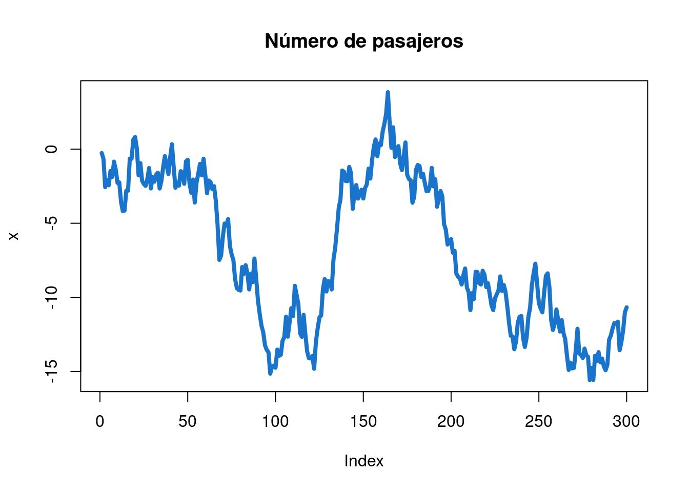
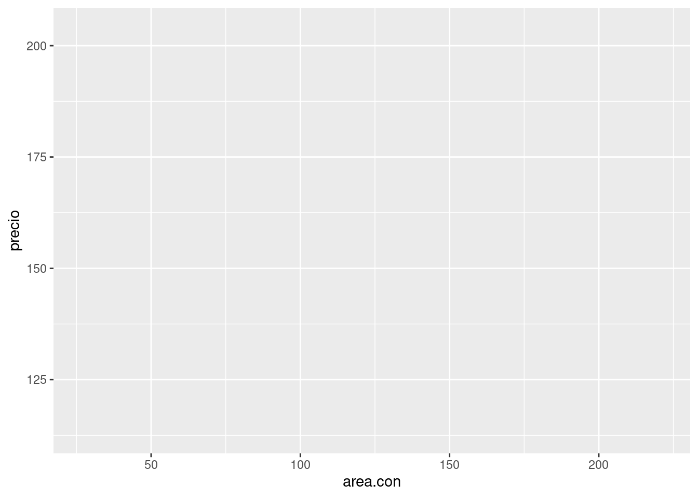
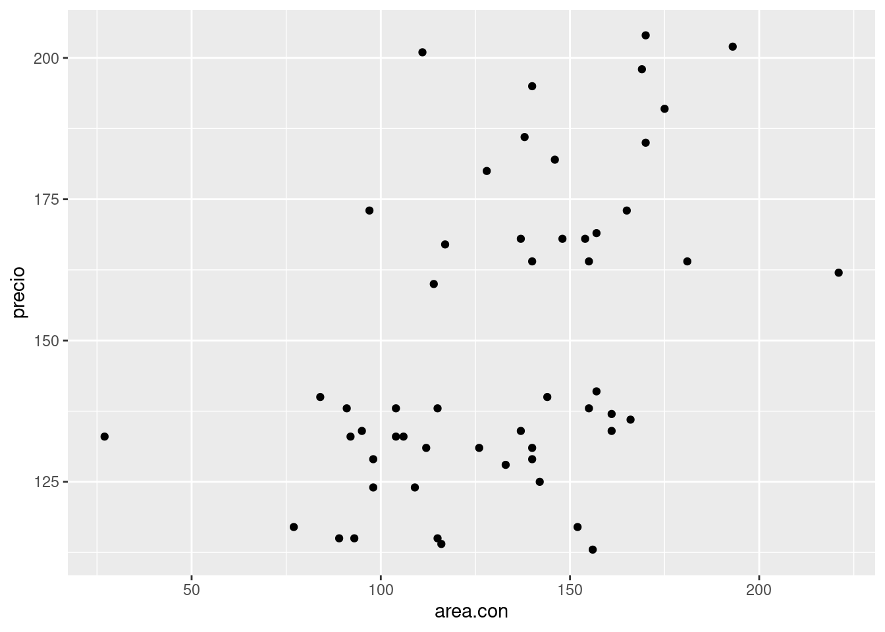
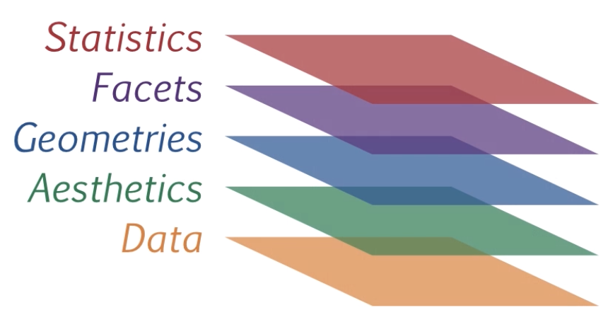
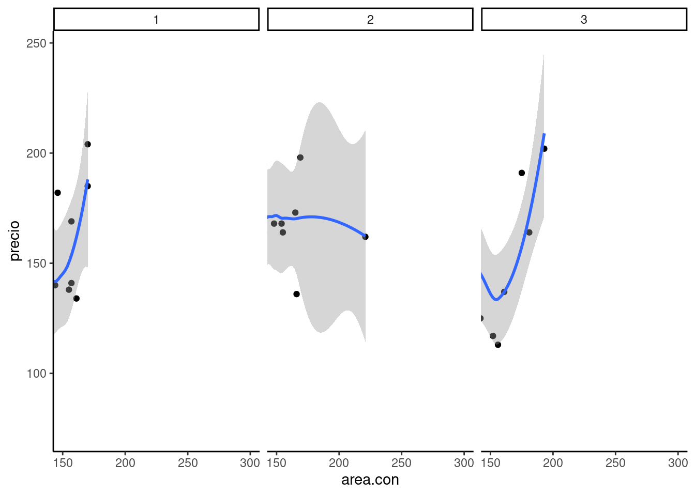
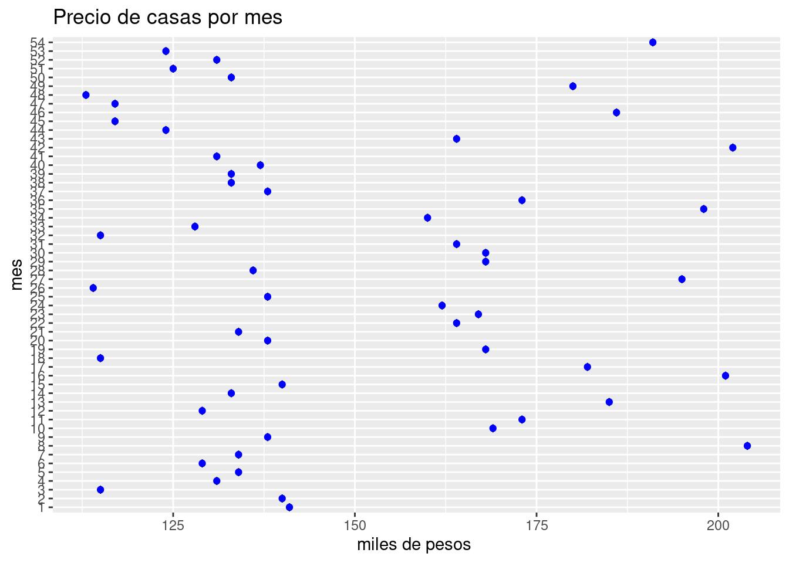
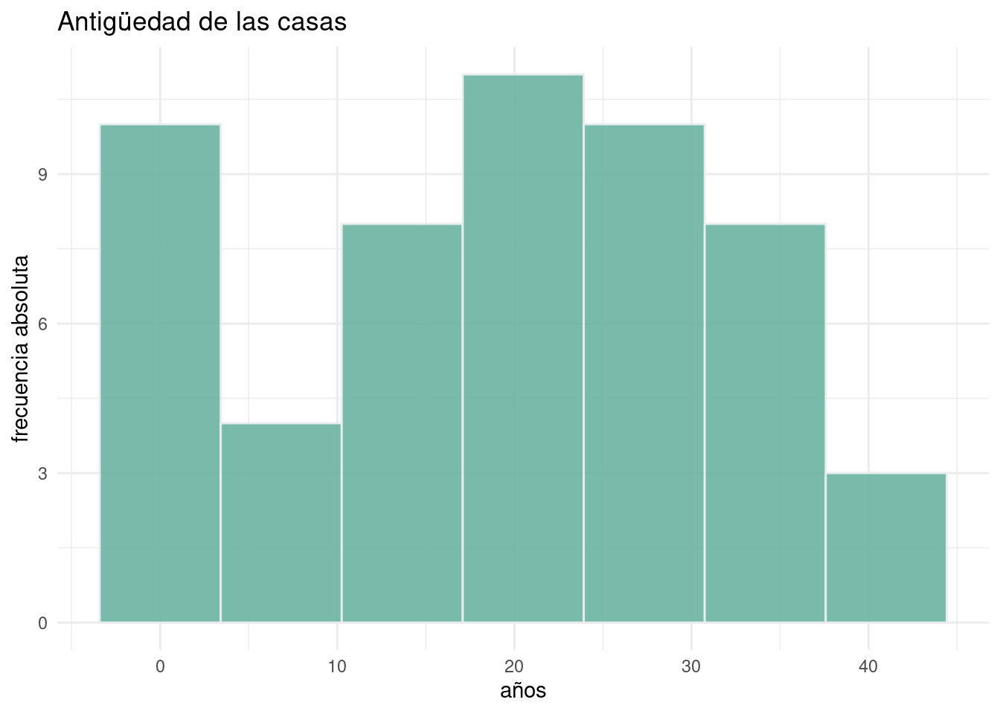
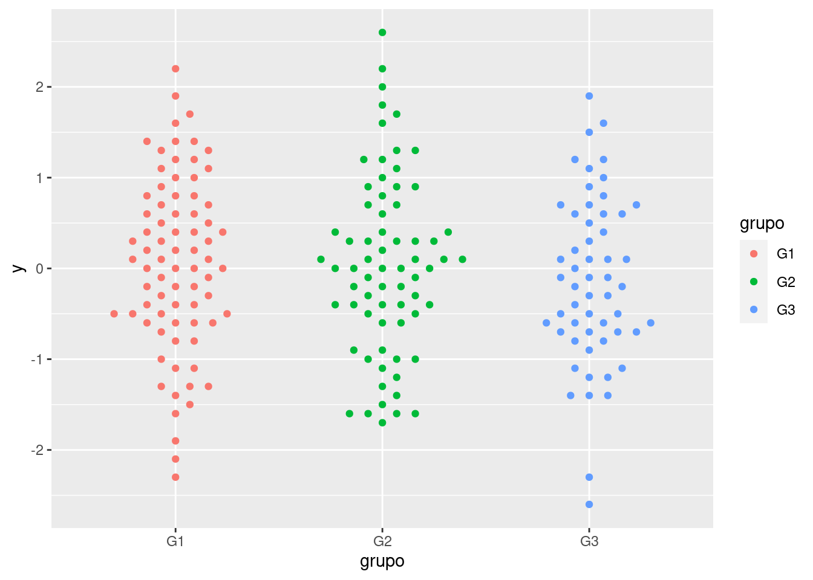
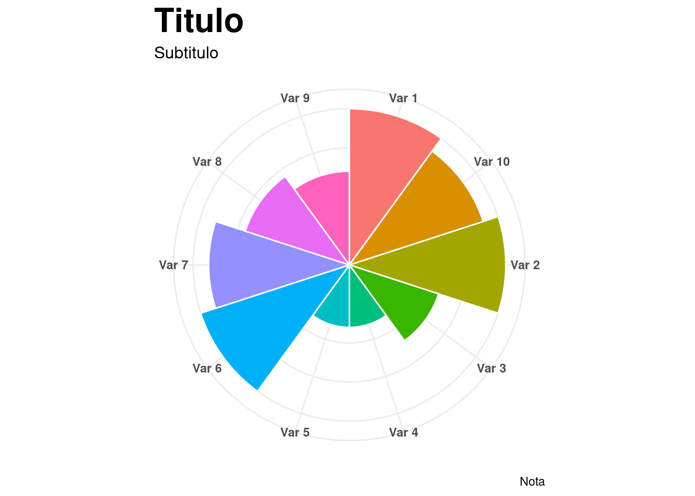

Código 3
Módulo 1- Unidad 1.1
dgonzalez
Introducción
La visualización de datos es una de partes más importantes del análisis de datos, que permite de manera gráfica representar la información con fines de poder
Algunas consideraciones
| Tipo de variable | Tipos de escala | Tipo de gráfico | Sintaxis R |
|---|---|---|---|
| Cualitativa | Nominal | diagrama de torta | pie(table(x)) |
| Ordinal | diagrama de barras | barplot(table(x)) | |
| diag.barras dobles | barplot(table(x,y)) | ||
| diag. mosaico | plot(x,y) | ||
| Cuantitativa | De intervalo | diagrama de tallos y hojas | stem(x) |
| histograma | hist(x) | ||
| De razón | diagrama de puntos | plot(x,y) | |
| diagrama de densidad | density(x) | ||
| diagrama de cajas | boxplot(x) | ||
| diagrama de linea | plot(x, type=“l”) | ||
Variable cualitativa-nominal
1. Gráfico de tortas
cc=c(20, 10, 20, 20, 20, 20, 20, 20, 20, 30, 20, 20, 20, 10, 30, 20, 20, 30, 20,
30, 30, 20, 10, 30, 20, 20, 30, 30, 10, 20, 10, 20, 20, 20, 10, 20, 10, 20,
20, 30, 30, 30, 10, 30, 20, 20, 20, 20, 20, 20, 10, 20, 30, 30, 10, 10, 10,
20, 10, 20, 10, 30, 20, 10, 20, 30, 10, 30, 30, 30, 20, 30, 30, 30, 30, 30,
30, 20, 10, 30, 10, 20, 20, 10, 20, 20, 20, 20, 10, 20)
t1=table(cc)
pie(t1)
cc=c(20, 10, 20, 20, 20, 20, 20, 20, 20, 30, 20, 20, 20, 10, 30, 20, 20, 30, 20,
30, 30, 20, 10, 30, 20, 20, 30, 30, 10, 20, 10, 20, 20, 20, 10, 20, 10, 20,
20, 30, 30, 30, 10, 30, 20, 20, 20, 20, 20, 20, 10, 20, 30, 30, 10, 10, 10,
20, 10, 20, 10, 30, 20, 10, 20, 30, 10, 30, 30, 30, 20, 30, 30, 30, 30, 30,
30, 20, 10, 30, 10, 20, 20, 10, 20, 20, 20, 20, 10, 20)
labs=c("Ing. Mecánica","Ing. Civil ","Ing.Sistemas")
pct=round(table(cc)/sum(table(cc))*100)
labs=paste(labs, pct);labs=paste(labs, "%", sep = " ")
t1=table(cc)
pie(t1,
labels=labs,
main=" Distribución por carrera")
Variable cualitativa-ordinal
2.Gráfico de barras
ev=c(5,13,30,52,35)
barplot(ev)
ev=c(5,13,30,52,35)
ev=as.table(ev)
names(ev)=c("MR","R","B","MB","E")
barplot(ev, col=c("red","yellow","orange","green","blue"),
main = "Evaluación proceso de inducción",
las=1)
3. Gráfico de barras 2
conteo <- table(mtcars$vs, mtcars$gear)
barplot(conteo)counts <- table(mtcars$vs, mtcars$gear)
rownames(counts)=c("Montor en linea", "Motor en V")
barplot(counts, main="Número de cambios adelante por Tipo de motor",
xlab="Número de cambios adelante ",
col=c("dodgerblue3","orange"),
legend = rownames(counts),
las=1)
4. Diagrama de mosaico
mosaicplot(~gear + vs,
data = mtcars,
color = c("dodgerblue3","orange"),
las = 1) Variables cuantitativas
5. Diagrama de tallos y hojas
nf=c(4.1, 2.7, 3.1, 3.2, 3.0, 3.2, 2.0, 2.4, 1.6, 3.2, 3.1, 2.6, 2.0, 2.4, 2.8,
3.3, 4.0, 3.4, 3.0, 3.1, 2.7, 2.7, 3.0, 3.8, 3.2, 2.2, 3.5, 3.5, 3.8, 3.5,
3.9, 4.2, 4.3, 3.9, 3.2, 3.5, 3.5, 3.7, 4.1, 3.7, 3.5, 3.6, 3.2, 3.1, 3.4,
3.0, 3.0, 3.0, 2.7, 1.7, 3.6, 2.1, 2.4, 3.0, 3.1, 2.5, 2.5, 3.6, 2.2, 2.4,
3.1, 3.3, 2.7, 3.7, 3.0, 2.7, 3.0, 3.2, 3.1, 2.4, 3.0, 2.7, 2.5, 3.0, 3.0,
3.0, 3.2, 3.1, 3.8, 4.1, 3.7, 3.5, 3.0, 3.7, 3.7, 4.1, 3.7, 3.9, 3.7, 2.0)
# Diagrama de tallos y hojas
stem(nf)##
## The decimal point is at the |
##
## 1 | 67
## 2 | 00012244444
## 2 | 555677777778
## 3 | 0000000000000011111111222222223344
## 3 | 555555566677777777888999
## 4 | 01111236. Histograma
hist(nf)
h1=hist(nf,
main = "Nota final matemáticas fundamentales",
xlab = "nota", ylab="frecuencias absolutas",
labels=TRUE,
col="dodgerblue3",
ylim = c(0,30))
abline(v=3,col="red")
7. Diagrama de densidad
nf=c(4.1, 2.7, 3.1, 3.2, 3.0, 3.2, 2.0, 2.4, 1.6, 3.2, 3.1, 2.6, 2.0, 2.4, 2.8,
3.3, 4.0, 3.4, 3.0, 3.1, 2.7, 2.7, 3.0, 3.8, 3.2, 2.2, 3.5, 3.5, 3.8, 3.5,
3.9, 4.2, 4.3, 3.9, 3.2, 3.5, 3.5, 3.7, 4.1, 3.7, 3.5, 3.6, 3.2, 3.1, 3.4,
3.0, 3.0, 3.0, 2.7, 1.7, 3.6, 2.1, 2.4, 3.0, 3.1, 2.5, 2.5, 3.6, 2.2, 2.4,
3.1, 3.3, 2.7, 3.7, 3.0, 2.7, 3.0, 3.2, 3.1, 2.4, 3.0, 2.7, 2.5, 3.0, 3.0,
3.0, 3.2, 3.1, 3.8, 4.1, 3.7, 3.5, 3.0, 3.7, 3.7, 4.1, 3.7, 3.9, 3.7, 2.0)
plot(density(nf))
plot(density(nf),
main="Distribución notas de matemátias fundamentales",
col="dodgerblue3",
lwd=5,
las=1,
xlab = "Nota",
ylab = "Densidad")
8. Diagrama de cajas
boxplot(nf)
boxplot(nf, main="Nota final matemáticas fundamentales",
col="dodgerblue3",
las=1)
abline(h=3, col="red")9. Comparación diagrama de cajas
boxplot(nf~cc)
nf=c(4.1, 2.7, 3.1, 3.2, 3.0, 3.2, 2.0, 2.4, 1.6, 3.2, 3.1, 2.6, 2.0, 2.4, 2.8,
3.3, 4.0, 3.4, 3.0, 3.1, 2.7, 2.7, 3.0, 3.8, 3.2, 2.2, 3.5, 3.5, 3.8, 3.5,
3.9, 4.2, 4.3, 3.9, 3.2, 3.5, 3.5, 3.7, 4.1, 3.7, 3.5, 3.6, 3.2, 3.1, 3.4,
3.0, 3.0, 3.0, 2.7, 1.7, 3.6, 2.1, 2.4, 3.0, 3.1, 2.5, 2.5, 3.6, 2.2, 2.4,
3.1, 3.3, 2.7, 3.7, 3.0, 2.7, 3.0, 3.2, 3.1, 2.4, 3.0, 2.7, 2.5, 3.0, 3.0,
3.0, 3.2, 3.1, 3.8, 4.1, 3.7, 3.5, 3.0, 3.7, 3.7, 4.1, 3.7, 3.9, 3.7, 2.0)
cc=c(20, 10, 20, 20, 20, 20, 20, 20, 20, 30, 20, 20, 20, 10, 30, 20, 20, 30, 20,
30, 30, 20, 10, 30, 20, 20, 30, 30, 10, 20, 10, 20, 20, 20, 10, 20, 10, 20,
20, 30, 30, 30, 10, 30, 20, 20, 20, 20, 20, 20, 10, 20, 30, 30, 10, 10, 10,
20, 10, 20, 10, 30, 20, 10, 20, 30, 10, 30, 30, 30, 20, 30, 30, 30, 30, 30,
30, 20, 10, 30, 10, 20, 20, 10, 20, 20, 20, 20, 10, 20)
labs=c("Ing. Mecánica","Ing. Civil ","Ing.Sistemas")
boxplot((nf~cc),main="Nota final matemáticas fundamentales por carrera",
col="dodgerblue3")
abline(h=3, col="red")
abline(h=4, col="blue")
10. Gráfico de series de tiempo
t=1:300 ; x=w=rnorm(300,0,1); x<-w; for(t in 2:300) x[t]<-x[t-1]+w[t]
plot(x, type="l",
main="Número de pasajeros",
col="dodgerblue3",
lwd = 4)
11. Resumen
x=rnorm(100,100,20)
y=rnorm(100,100,25)
z=rbinom(100,4,0.30)
t=1:100
pie(table(z))
barplot(table(z))
stem(x)
hist(x)
boxplot(x)
plot(x,y)
plot(t,y, type="l")
plot(density(x))Paquetes adicionales
Hasta el momento se ha utilizado R base para la elaboración de gráficos, a continuación se presentan algunos paquetes que mejoran la construcción de gráficos y su visualización :
ggplot2.

Este paquete de R permite la construcción de gráficos utilizando para ello una “grámatica” de los grafocos, la cual incorpora componentes como : los datos (data), un conjunto de coordenadas ( ), una serie de geometrias (geoms)
Componentes de un gráfico en ggplot2:
Data: capa de los datos
Aesthetics: capa estetica (aes), definimos las variables a utilizar en el gráfico
Geometries: capa de geometrias, se define el tipo de gráfica a realizar
Facets: capa de facetas, permite detallar la gráfica por categorias
Statistics: capa de estadística, permite agregar modelos
*Coordinates: capa de coordenadas, permite ajustar las escalas de los ejes
Theme: capas de características del gráfico que no dependen de los datos
Para empezar, inicialmente se instalar el paquete
install.packages("ggplo2")Y luego habilitarlo para su uso
library(ggplot2)Se empieza con el primero de los lienzo, donde se declara la data que vamos a utilizar

casas=read.csv("data/casas.csv")
fig=ggplot(data=casas)
fig
Como segundo paso se definen las variables que se van a utilizar en la construcción del gráfico

fig=ggplot(data=casas, aes(x=areaconst , y=precio))
fig
Luego de tener definida la base y las variables a utilizar se indica la geometria a utilizar, en este caso se trata de puntos

fig=ggplot(data=casas, aes(x=areaconst , y=precio))+
geom_point()
fig
Otros elementos a utilizar son :
facet que nos ayuda a visualizar el gráfico por factor, construyendo la gráfica para cada mes en este caso

fig=ggplot(data=casas, aes(x=areaconst , y=precio))+
geom_point() + facet_wrap(~ mes)
fig
stat permite realizar modelos lineales y mostrar asi la relación existente entre las variables

fig=ggplot(data=casas, aes(x=areaconst , y=precio))+
geom_point() + facet_wrap(~ mes)+stat_smooth(method = "loess" , formula =y ~ x)
fig
coordinates la cual permite ajustar los ejes , por ejemplo podemos determian el rango de que queremos presentar en la gráfica

fig=ggplot(data=casas, aes(x=areaconst , y=precio)) + geom_point() +
facet_wrap(~ mes) +
stat_smooth(method = "loess" , formula =y ~ x) +
coord_cartesian(xlim = c(1500,3000))
fig
themes finalmente la capa del tema o fondo de la gráfica

fig=ggplot(data=casas, aes(x=areaconst , y=precio)) + geom_point() +
facet_wrap(~ mes) +
stat_smooth(method = "loess" , formula =y ~ x) +
coord_cartesian(xlim = c(1500,3000)) +
theme_classic()
fig
Otros ejemplos de ggplot2
casas$mes=as.factor(casas$mes)
fig2 = ggplot(data=casas, aes(x=precio, y=mes)) +
geom_boxplot(fill="lightSalmon",
color="black")+
geom_point(color="blue")+
ggtitle("Precio de casas por mes")+
labs(x="miles de pesos " , y="mes")
fig2 
fig3=ggplot(casas, aes(antigüedad)) +
geom_histogram(bins = 7,fill="#69b3a2", color="#e9ecef", alpha=0.9)+
theme_minimal() +
labs(x = "años", y = "frecuencia absoluta") +
ggtitle("Antigüedad de las casas")
fig3 
fig=ggplot(data = diamonds, aes(x = cut, fill = color)) +
geom_bar(colour= "black", size = 0.3 ) +
coord_polar()
fig
highcharter

Este es un paquete especializado en la creación de gráficos dinámicos que emplea inrnamente javascript.
Este paquete permite crear varios tipos de gráficos como: diagramas de dispersión, de burbuja, de línea, serie de tiempo, mapas de calor, treemap, gráficos de barras, redes, entre otros.
Gran parte de los gráficos se realizan con la función : ** hchart() ** que es aplicada a objetos
Inicialmente se instala el paquete por una única vez
install.packages("highcharter")Luego se carga para utilizar sus funciones
library(highcharter)hchart(casas, "scatter", hcaes(x = precio, y = areaconst, group = mes)) %>%
hc_title(text = "Precio por área construida") plotly

fmsb
Paquete para el trabajo en Estadística Medica que se utiliza para la construcción de un diagrama de radar
# install.packages("fmsb")
library(fmsb)
set.seed(1)
df <- data.frame(rbind(rep(10, 8),
rep(0, 8),
matrix(sample(0:10, 8),nrow = 1)))
colnames(df) <- paste("Var", 1:8)
radarchart(df,
cglty = 1, cglcol = "gray",
pcol = 4, plwd = 2,
pfcol = rgb(0, 0.4, 1, 0.25)) 
Tomado de : https://r-charts.com/es/ranking/radar-chart/
Mapas
En el siguiente enlace encontrará los archivos para la construcción de los mapas en formato .shp (debe copiar los cuatro archivos)
Archivos .shp : https://sites.google.com/site/seriescol/shapes
A continuación el código para el mapa de Cali sin información
Mapa de Cali
require(sp)
require(rgdal)
require(raster)
cali=shapefile("map/cali/cali.shp") # importa mapa en formato .shp
plot(cali) # gráfico de Cali
### Mapa de Cali con indice
Para mostrar la información se debe incorporar un vector al objeto cali que contiene la información para el mapa. este objeto en formato lista tiene incorporada una data que contiene varias columnas al cual se le adiciona la información a publicar.
En el caso de Cali tiene 22 comunas se adiciona un vector con 22 valores con el nombre de indice
cali=shapefile("map/cali/cali.shp") # importa mapa en formato .shp
cali@data$indice=rnorm(22) # se genera variable a ilustrar
spplot(cali[,21]) 
Mapa de Colombia
Para el caso de Colombia se obtiene el archivo depto.shp que contiene la información de Colombia por departamentos (33)
require(sp)
require(rgdal)
require(raster)
mapco=shapefile("map/colombia/depto.shp") # importa mapa en formato .shp
plot(mapco) # gráfico de Colombia
Para representar información en el mapa seden ingresar una vector con 33 valores, igual numero de departamentos en el mismo orden en que se encuentran los nombre de los departamento en el archivo mapco
mapco$NOMBRE_DPT## [1] "ANTIOQUIA"
## [2] "ATLANTICO"
## [3] "SANTAFE DE BOGOTA D.C"
## [4] "BOLIVAR"
## [5] "BOYACA"
## [6] "CALDAS"
## [7] "CAQUETA"
## [8] "CAUCA"
## [9] "CESAR"
## [10] "CORDOBA"
## [11] "CUNDINAMARCA"
## [12] "CHOCO"
## [13] "HUILA"
## [14] "LA GUAJIRA"
## [15] "MAGDALENA"
## [16] "META"
## [17] "NARIÑO"
## [18] "NORTE DE SANTANDER"
## [19] "QUINDIO"
## [20] "RISARALDA"
## [21] "SANTANDER"
## [22] "SUCRE"
## [23] "TOLIMA"
## [24] "VALLE DEL CAUCA"
## [25] "ARAUCA"
## [26] "CASANARE"
## [27] "PUTUMAYO"
## [28] "AMAZONAS"
## [29] "GUAINIA"
## [30] "GUAVIARE"
## [31] "VAUPES"
## [32] "VICHADA"
## [33] "ARCHIPIELAGO DE SAN ANDRES PROVIDENCIA Y SANTA CATALINA"Si quiereramos representar un mapa con las muertes causadas por covid en Colombia por departamento debemos crear una tabla con la información relacionada con esta variable por departamento en el mismo orden contenida en el archivo depto.shp y adicionarla como variable : mapcol@data$muertes
De la base de datos abiertos Colombia se obtiene la siguiente información correspondiente al número de fallecidos por Covid19, durante el periodo marzo 2019 a agosto 25 de 2021
# colombia=readRDS("data/Colombia.RDS")
# colombia$departamento_nom= str_to_upper(colombia$departamento_nom)
# t=table(colombia$departamento_nom,colombia$estado)
fallecidos=c(15174,3876,26516,807,2417,2151,880,1333,2388,3487,6495,382,2880,
1296,1380,2076,2861,3961,1635,2119,6934,1546,3411,11929,400,844,
620,249,29,87,17,45,133)require(sp)
require(rgdal)
require(raster)
require(RColorBrewer)
mi.palette <- brewer.pal(n = 7, name = "OrRd") # paleta de colores
mapco=shapefile("map/colombia/depto.shp") # importa mapa en formato .shp
# colombia=readRDS("data/Colombia.RDS")
# colombia$departamento_nom= str_to_upper(colombia$departamento_nom)
# t=table(colombia$departamento_nom,colombia$estado)
fallecidos=c(15174,3876,26516,807,2417,2151,880,1333,2388,3487,6495,382,2880,
1296,1380,2076,2861,3961,1635,2119,6934,1546,3411,11929,400,844,
620,249,29,87,17,45,133) # vector con información
mapco@data$fallecidos=fallecidos # se adiciona variable con 33 valores = 33 dptos, en mismo orden
spplot(mapco[,6], col.regions = mi.palette, cuts = 6) # mapa
Margenes de los gráficos
# Grafico normal
x=rnorm(100,100,20)
plot(density(x))
margenes de la grafica c(bottom, left, top, right)
par(mar = c(5, 4, 4, 2) + 0.1)
x=rnorm(100,100,20)
plot(density(x))
margenes de la gráfica
par(mai = c(1.5, 1.5, 1.5, 1.5))
x=rnorm(100,100,20)
plot(density(x))
### Matriz de gráficos mfrow = c(2, 2)
x=rnorm(100,100,20)
y=rnorm(100,100,25)
z=rbinom(100,4,0.30)
t=1:100
par(mfrow = c(2, 2) ) # definición de la matriz
plot(density(x))
barplot(table(z))
hist(x)
plot(x,y)
margenes exteriores c(bottom, left, top, right)
par(mfrow = c(2, 2), # matriz de graficos 2x2
oma = c(3, 5, 2, 4) ) # margenes de la imagen
plot(density(x))
barplot(table(z))
hist(x)
plot(x,y)
Tamaño texto
x=rnorm(100,100,20)
plot(density(x),cex.lab=.8, # tamaño de etiqueta ejes
cex.axis=2, # tamaño escalas de los ejes
cex.main=1.5, # tamaño del titulo
cex.sub=1) # tamaño del subtitulo
Flexdashboard
Este paquete permite la construcción de tableros que pueden ser publicados en formato html. A continuación se describen las principales características y la forma que podemos construir un tablero
Iniciaremos cargando el paquete (por una única vez)
install.packages("flexdashboard")Tambien debemos activarlo, aunque este procedimiento viene en el formato que nos proporciona RStudio
library(flexdashboard)Inicialmente utilizamos la plantilla que para este propósito tiene RStudio, entrando por el menú : File/ New file / RMarkdown..


Este procedimiento genera un formato para un tablero que puede ser modificado o ajustado a nuestras necesidades

En este formato podemos distinguir varias partes :
- Encabezado : donde se define la estructura del tablero y los temas
- Bloque setup . Donde colocamos las instrucciones generales de R , como puede ser cargar las bases de datos que seran utilizadas durante todo el documento, ademas de cargar las librerias necesarias
- Definicion de columnas o filas del tablero y hojas del tablero
- Bloques de R con el contenido